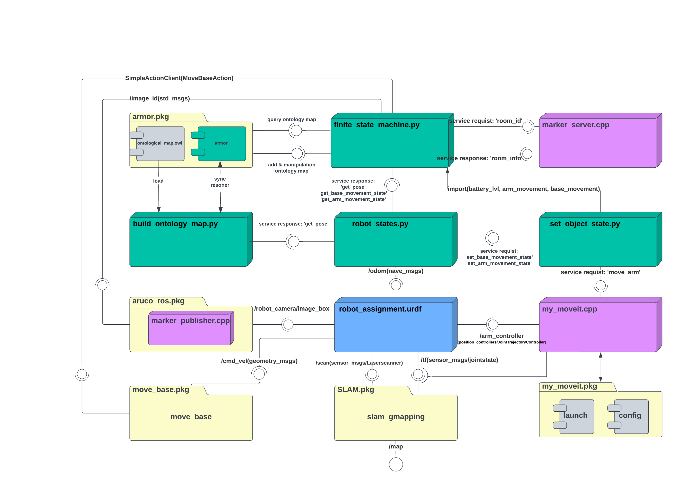

UML graph¶
{kind=link}
- The whole software structure is divided into 5 important parts:
- Python nodes
- Cpp nodes
- Helper scripts
- URDF
- Packages
1. Python nodes¶
Finite State Machine(FSM):
FSM is a mother node of the whole architecture, it uses the build_ontology_map.py to import a class defined to ADD, MANIPULATION, and get QUERY from the information. Moreover imports three important services defined in set_object_state.py to set the state of the battery, base movement, and arm movement. This node subscribes to marker_publisher.cpp node to get
/image_iddetected by the robot camera and this id number is communicated with marke_server.cpp node to get information about id founded. When the robot wants to move after detecting all markers id published a Move Base Action to the move_base package to move base to the robot. Finally uses a service response to get Pose, Base movement state, and arm movement state from the robot_states.py node.Robote States:
Robot states subscribe to the
/odomtopic from robot urdf to get information odometry information. All services do set and get here, the services are:base_movement_stateandbattery_level_state. AdditionallyGet_poseservice done in this node and the I/O of the service communicates via <response & requist> with FSM node and helper scripts.
2. Cpp nodes¶
Marker Server:
All room proprieties are defined in this node like room id and room details (position, connection, door, last visit time). This node communicates with the FSM node via service (Req/Res) to send room information.
My Moveit:
This node contains all necessary joint configurations to find boxes in the environment. Via service communicates with a helper script set_object_state.py to changes state of robot arm between True and False each time the arm state is True this node becomes active and sends joint position information to robot_assignment.urdf. Otherwise, if it is * False* the robot arm stop working.
3. Helper scripts¶
These scripts don’t start any node they were used only to import essential functions used in node FSM and robot_state
Build Ontology Map:
This script uses a service response generated from the robot_state.py node to get the current position of the robot in the map and update the is_in method. This method indicates the current location of the robot. Furthermore, this script is useful to load ontology_map defined in the armor package ad sync with the resoner.
Set Object State:
Three important services for the state of the battery_state, base_movement_state, and arm_movement_state are defined here. This script sends a service request to the robot_state.py node to set the base movement state and set battery level state. Additionally sends a service request also to my_moveit.cpp node for set arm movement state.
4. URDF¶
Robot Assignment:
Its generated from * Moveit Setup Assistant* and contain a robot model and various topic useful for moving the base and controlling the arm of the robot. Robot urdf subscribes to move_base to get velocity uses
/cmd_veltopic and publishes odometry information uses/odomtopic to robot_state.py node to get the current position of the robot in the ontology map, furthermore publishes/robot_camera/image_boxto marker_publisher.cpp node to send image detected via camera.Finally publishes base information using the
/scantopic and publishes tf transform tree [1]_ uses/tftopic to slam_gmapping to update robot situation in map.[1]_ tf is a package that lets the user keep track of multiple coordinate frames over time. tf maintains the relationship between coordinate frames in a tree structure buffered in time, and lets the user transform points, vectors, etc between any two coordinate frames at any desired point in time.
5. Packages¶
Aruco Ros:
Aruco library provides real-time marker-based 3D pose estimation using AR markers. In this assignment used marker_publisher.cpp node to publishes
/image_iddetected from/robot_camera/image_boxand its published to FSM node.– For more information on Aruco package then refer to this link.
SLAM Gmapping:
The gmapping package provides laser-based SLAM (Simultaneous Localization and Mapping), as a ROS node called slam_gmapping. Using slam_gmapping, you can create a 2-D occupancy grid map (like a building floorplan) from the laser and pose data collected by a mobile robot. Slam_gmapping used
/scanandtftopic data generated by robot urdf in order to update the position of the base_link and arm_link in the map.– For more information on the Slam package then refer to this link.
Move Base:
The move_base package provides an implementation of an action that, given a goal in the world, will attempt to reach it with a mobile base. The move_base node links together a global and local planner to accomplish its global navigation task. Move base to get an Action from FSM node and publish velocity via
/cmd_velto robot urdf.– For more information on the Move base package then refer to this link.
Assignment Moveit:
After building the urdf or xacro file you can proceed in your terminal with the command
roslaunch moveit_setup_assistant setup_assistant.launchand run Moveit setup assistant. Now there is a possibility to define various properties for robot models and generate new urdf file plus package where there is an essential configuration with a launch file to be able to use a robot model.– For more information on the Moveit package then refer to this link.
aRMOR:
aRMOR is a powerful and versatile management system for single and multi-ontology architectures under ROS. It allows loading, querying, and modify ontology map. aRMOR add and manipulate room and door in
ontological_map.owland send the query as feedback to the FSM node. Additionally, it works parallel with helper scriptbuild_ontology_map.pyto load the ontology map and synchronize witharmor_client.pyeach time ontology is updated.– For more information on the armor package then refer to this link.